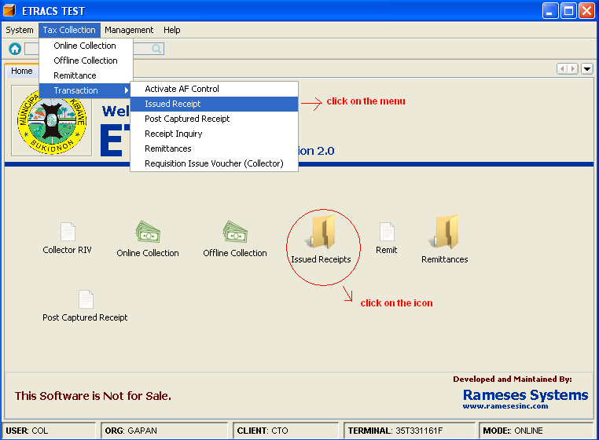
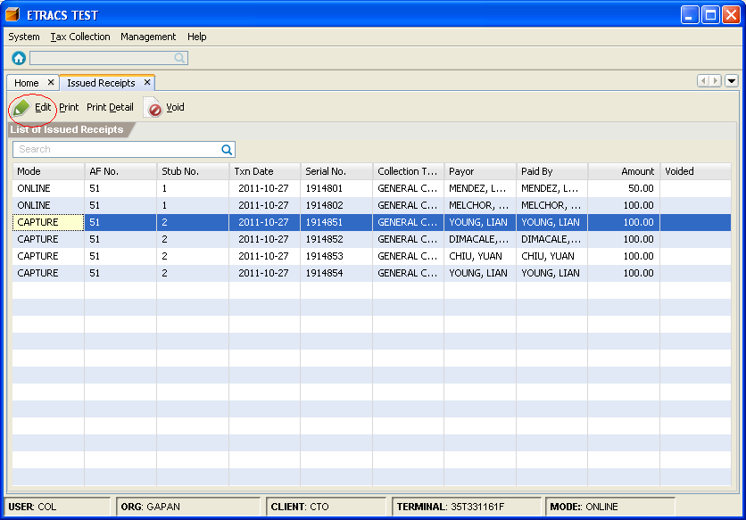
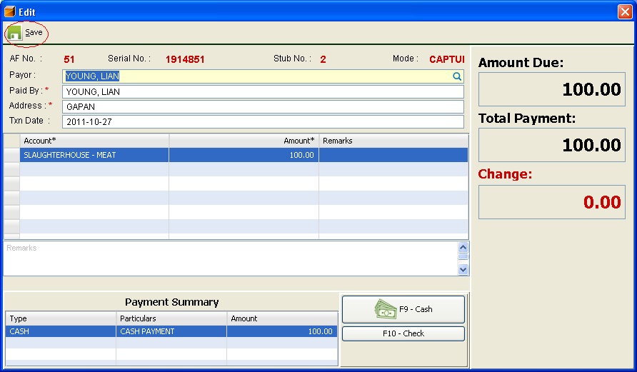
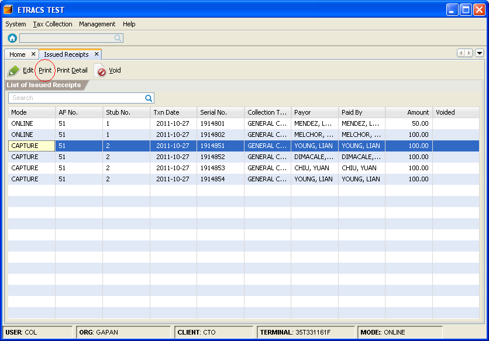
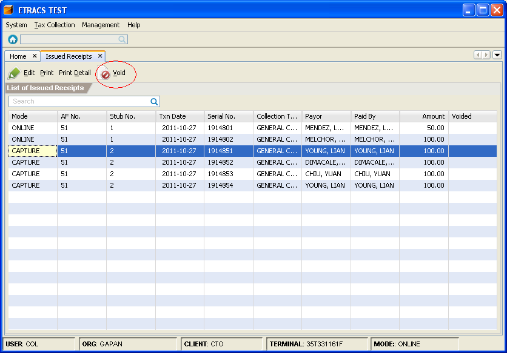
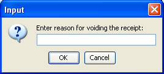

View Issued Receipts
This facility enables you to view, edit, reprint, and cancel receipts. Only receipts that are transacted
in offline and capture collection can be edited.
How to view issued receipt?
On the menu toolbar, go to "Tax Collection -> Transaction -> Issued Receipt" item. You can also click on the "Issued Receipts"
icon from the home page.

How to edit receipt information?
1. Go to Issued Receipt page.(Please refer to Viewing issued receipts)
2. Select a receipt, and click on the "Edit" button.

3. Change the receipt information, and click on the "Save" button.

How to reprint a receipt?
1. Go to Issued Receipt page.(Please refer to Viewing issued receipts)
2. Select a receipt, and click on the "Print" button.

How to cancel a receipt?
1. Go to Issued Receipt page.(Please refer to Viewing issued receipts)
2. Select a receipt, and click on the "Void" button.

3. Specify a reason for voiding the receipt.

4. Click on the "OK" button or press [Enter]